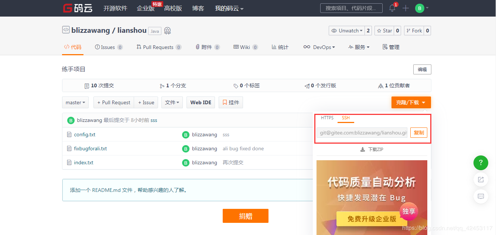

git系列的最后一部分内容，我们先来看看如何查看远程仓库。
输入
git remote -v
我们还可以删除远程库，输入
git remote remove origin
删除后再次查询，信息为空。
注意了，这样并不会把远程库真的删除了，这样只是删除了远程库地址的别名。
我们重新添加一个远程库的标记，输入
git remote add origin https://gitee.com/blizzawang/lianshou.git然后我们推送一下。
git push origin master这些在之前就已经说过了。
有些人可能会发现，自己在每次推送的时候都被要求输入用户名和密码，感觉非常不爽，那现在，我们来学习一下如何配置公钥从而免密登录。
如果想这样的话，我们的地址就应该换掉，因为HTTPS是不走443端口的，所以我们把地址环城ssh地址。

把红色框线内的地址复制，然后在git控制台输入指令
git remote remove origin
git remote add origin git@gitee.com:blizzawang/lianshou.git这样，我们的地址就添加完成了。
接下来，我们需要配置一个公钥。
$ ssh-keygen -t rsa -C config ****@qq.com后面输入的是你的邮箱。
中间不要输任何内容，一路回车，之后，git会帮你把信息保存到C:/Users/blizzawang/.ssh/id_rsa.pub
我们可以去该目录寻找。
然后把文件中的内容复制，接着来到网页。
点击这里，公钥标题可以随意填，然后把刚才复制的内容直接粘贴到底下，点击确定。输入一下用户密码，这样公钥就配置完成了。以后，你再提交修改内容，就都不需要输入用户名和密码了。